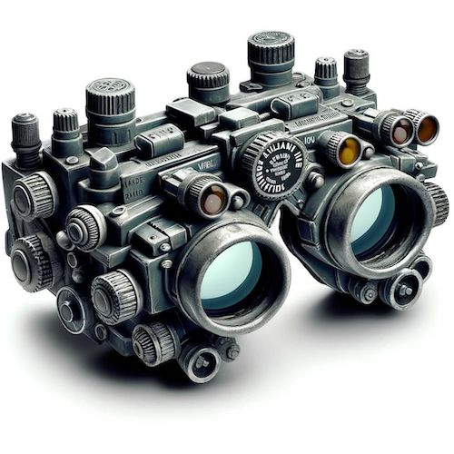
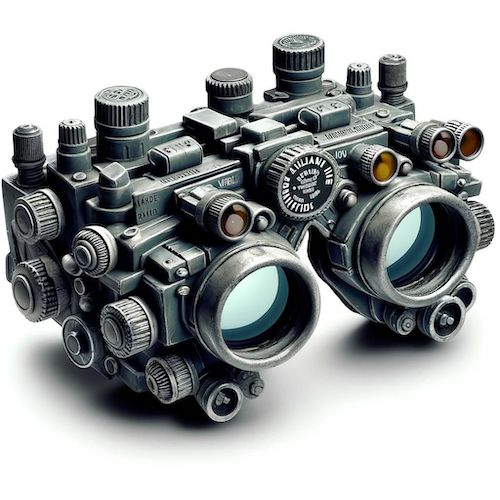
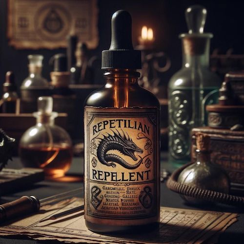
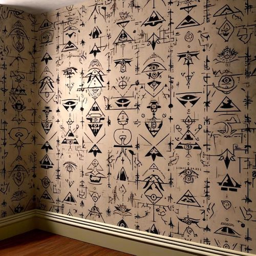
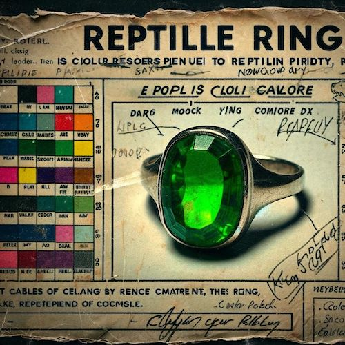

Infrared Reptilian Vision Goggles
See them before they see you! Our Infrared Reptilian Vision Goggles allow you to detect reptilians in their true form, even in complete darkness. Ideal for late-night surveillance of your suspicious roommate.
See them before they see you! Our Infrared Reptilian Vision Goggles allow you to detect reptilians in their true form, even in complete darkness. Ideal for late-night surveillance of your suspicious roommate.
Keep your living spaces free from reptilian influences with our special blend of Anti-Reptilian Essential Oils. Just a few drops and you'll repel not just insects, but covert reptilian observers too!
Redecorate your home with our Shape-Shift Proof Wallpaper, guaranteed to prevent any reptilian transformations in your vicinity. It's stylish yet functional, adding that extra layer of security to your decor.
Our Reptilian Mood Rings change color based on the proximity of reptilians. Watch it closely; if it turns red, you might want to start asking your friend some serious questions.
